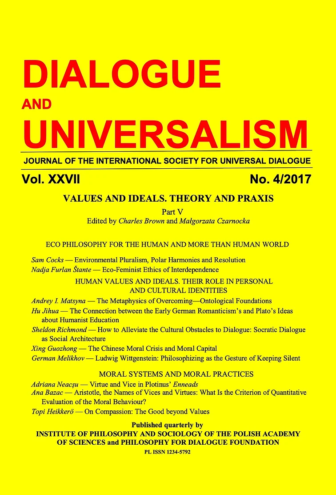

ISUD Journal
Dialogue and Universalism is the peer reviewed academic journal of the International Society for Universal Dialogue (ISUD).
It is sponsored by the International Society for Universal Dialogue and by the Philosophy for Dialogue Foundation.
It is published by the Institute of Philosophy and Sociology of the Polish Academy of Sciences and by the Philosophy for Dialogue Foundation.
Since 2019 Dialogue and Universalism is published three times a year.
Dialogue and Universalism, published in English, is wholly open for every scholars in the world, not being a publishing forum for the ISUD members only. All contributors are equally kindly welcome.
AIMS AND SCOPE
Dialogue and Universalism publishes philosophical articles from all philosophical traditions and domains. The metaphilosophical diversity is admitted as it is believed that dialogue, discussions, also clashing between philosophical traditions, schools and attitudes as well as drawing in philosophizing from other kinds of human knowledge lead to a synergy effect which develops and enhances philosophy as a whole. Dialogue and Universalism tends to show that philosophy is an essential eternal domain of human culture and an inevitable element of the nowadays human world. Dialogue and Universalism aims to demonstrate that philosophy plays a participative role: its conceptions, diagnoses and ideals impact or/and should impact the human world.
The ISUD community is convinced that philosophy has an important role to play in the struggle for the future of humanity. Critical and creative rational thinking is an opportunity for humankind to resist the lies and illusions of ideological manipulations that serve as instruments of enslavement and oppression. This open and broad vision of philosophy as an expression of human rationality offers a chance to free people’s awareness, to open their minds, and to extend their possibilities of thinking and acting. In doing so, philosophical reflection is able to refine and renew old ideals and values as well as to create new ones. It is these two aspects — free consciousness and new ideals — that are necessary to build a more decent human world. Philosophy with its amazingly sophisticated ways of thinking disposes a tremendous power to cope with the world and to change it. Philosophy is free from technical and practical interests, and constituted by the pursuit of removing — from a highly distanced and neutral perspective — falsehood, prejudices, mental, cultural, religious and social slavery. So it gives a hope for human beings’ emancipation as well as for an alteration of the world, first spiritual, and then material.
SPECIFICITY
Dialogue and Universalism publishes mainly thematic issues, however, mostly completed with few texts thematically different from the main theme of the issue. The forthcoming themes are announced in advance in NEXT ISSUES – CALL FOR PAPERS at this website (https://dialogueanduniversalism.eu/index.php/next-issues-call-for-papers/)The announcements should be treated as an open invitation for every scholar in the world to participate in our enterprises. Besides, we kindly welcome proposals of themes and contents of next Dialogue and Universalism issues. Each proposal is examined by the Dialogue and Universalism editors and accepted if it satisfies the criteria adopted in this journal.
To read extensively about Dialogue and Universalism please click here: www.dialogueanduniversalism.eu